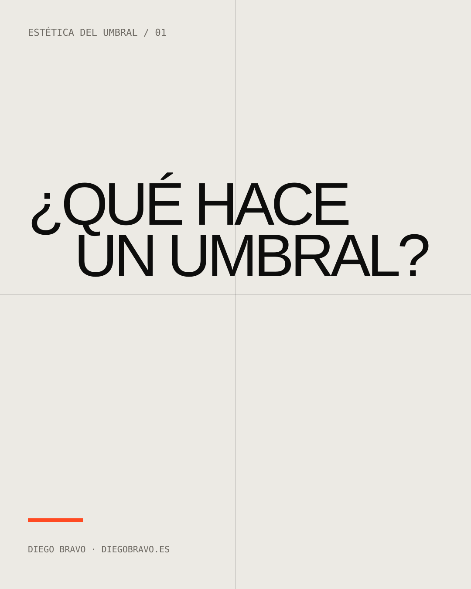
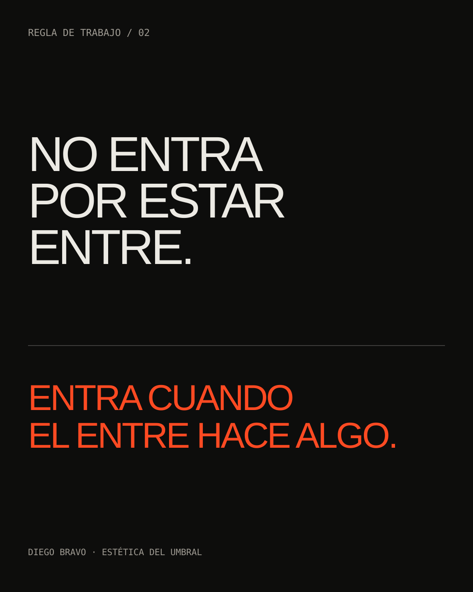
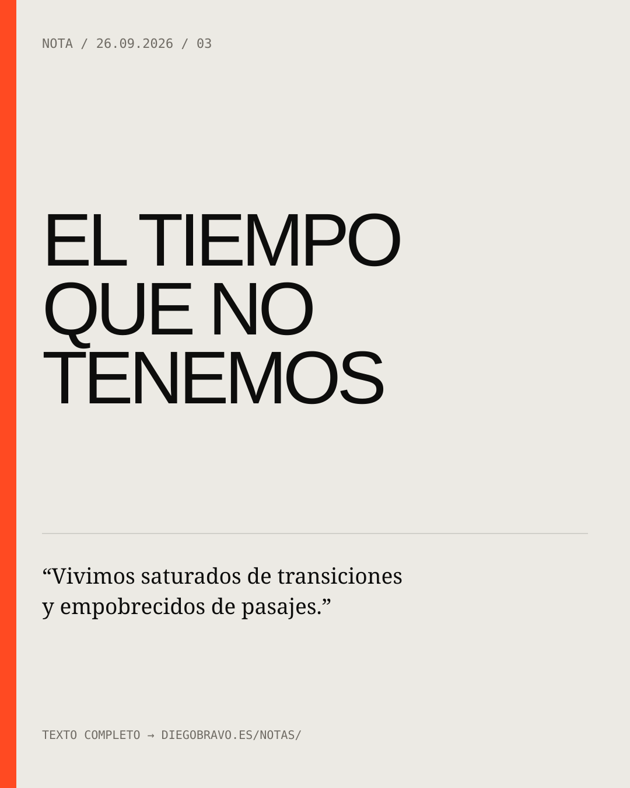
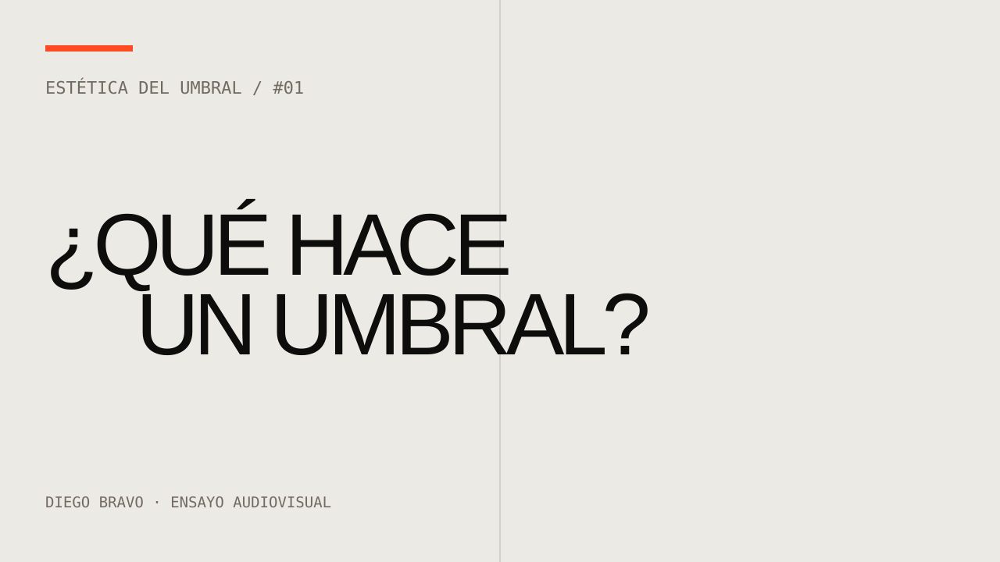
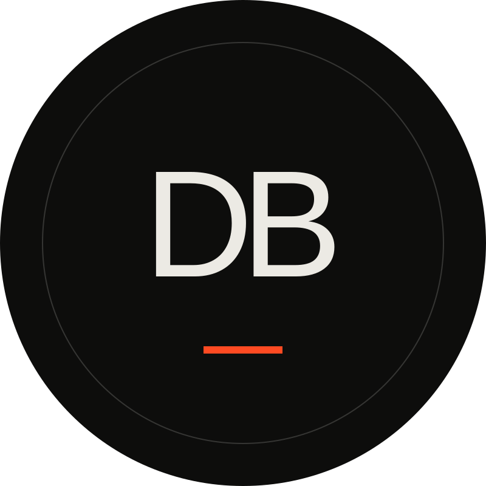
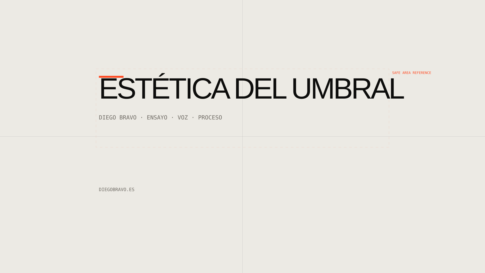
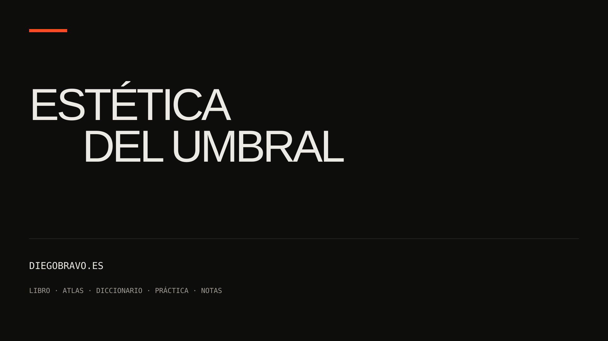

ENSAYO / 08–18 MIN
¿Qué hace un umbral?
Voz propia + montaje propio + fuentes trazables. Un problema, no una clase magistral.
No diseñar una identidad para ocultar la falta de corpus. Diseñar una circulación capaz de recibir obra, texto y proceso cuando existan.







Voz propia + montaje propio + fuentes trazables. Un problema, no una clase magistral.
Texto propio leído o desarrollado. Imagen mínima cuando la escucha sea el centro.
Hipótesis, ejecución, documento, fallo o consecuencia. No tutorial; caso.
Comentario propio. Si una imagen o vídeo ajeno no puede reutilizarse con seguridad, se enlaza y se describe.
No todo lo que puede encontrarse debe circular de nuevo. La procedencia, el permiso, la escala del fragmento y la necesidad real de incorporarlo forman parte de la pieza.
LABORATORIO INTERNO · NO INDEXAR · NO PRESENTAR COMO CANAL ACTIVO